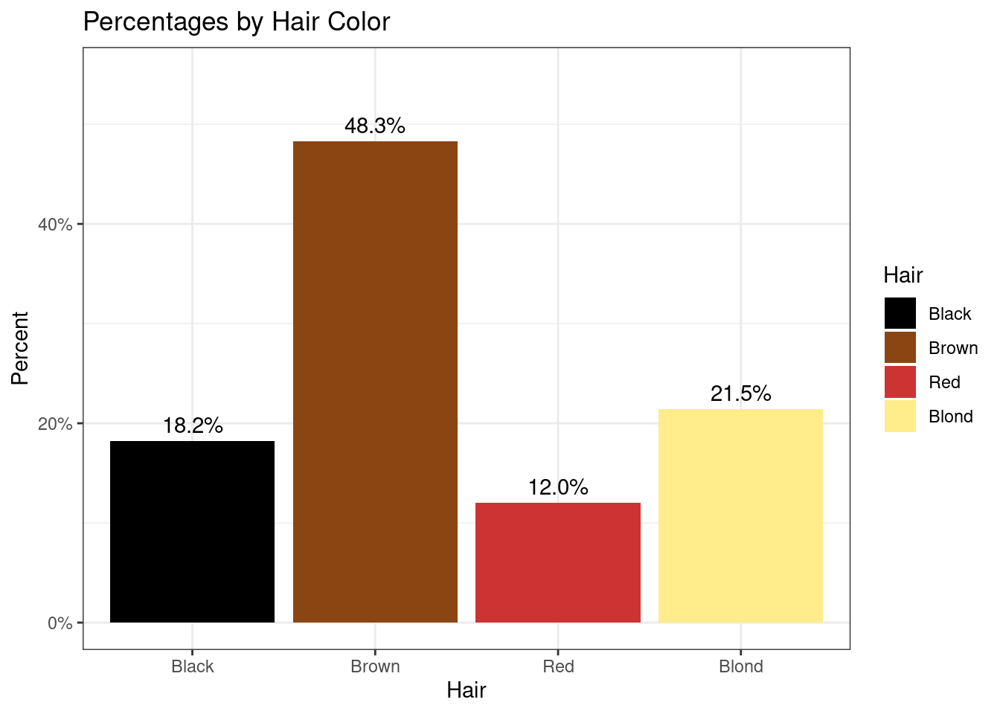
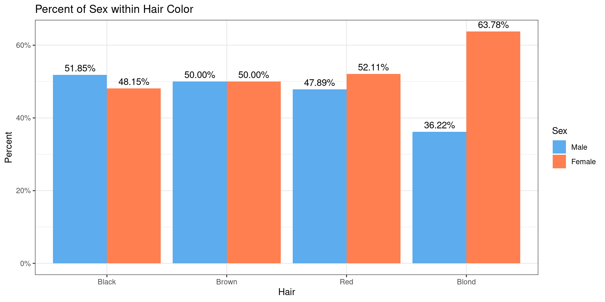
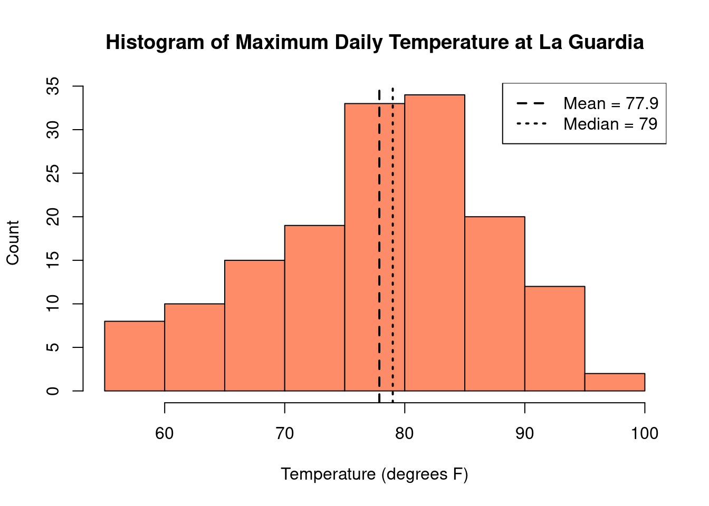

2 Data Summaries and Presentation
“Numerical quantities focus on expected values, graphical summaries on unexpected values.”
— John Tukey
- Define data and categorize and identify different types of data
- Understand and calculate numerical summaries of different data types
- Learn about different types of graphs and how they can be interpreted
2.1 Introduction to Data
Data can be virtually anything that is observed and recorded, including how tall you are, the color of all the cars in a town, or the time it takes to drive to work. Just as the different types of data can vary considerably, so can the amount. There is a natural tension between the quantity of data available and our abilities to make sense of it. It is difficult to sort through large streams of data and make any meaningful conclusions. Instead, we can better understand data by condensing it into human readable mediums through the use of data summaries, often displayed in the forms of tables and figures. However, in doing so, information is often be lost in the process. A good data summary will seek to strike a balance between clarity and completeness of information. The focus of this chapter will be on descriptive statistics, utilizing both numerical and graphical summaries of various types of data.
The optimal summary and presentation of data depends on the data’s type. There are two broad types of data that we may see in the wild, which we will call categorical data and continuous data. As the name suggests, categorical data (sometimes called qualitative or discrete data) are data that fall into distinct categories. Categorical data can further be classified into two distinct types:
- Nominal data: data that exists without any sort of natural or apparent ordering,
e.g., colors (red, green, blue), gender (male, female), and type of motor vehicle (car, truck, SUV).
- Ordinal data: data that does have a natural ordering, e.g., education (high school, some college, college) and injury severity (low, medium, high)
Continuous data (sometimes called quantitative data), on the other hand, are data that can take on any numeric value on some interval or on a continuum. Examples of continuous data include height, weight, and temperature. Categorical and continuous data are summarized differently, and we’ll explore a number of ways to summarize both types of data.
Categorical data: Data that takes on a distinct value (i.e., falls into categories)
Continuous data: Data that takes on numeric values
Nominal data: A type of categorical data where the categories do not have any apparent ordering
Ordinal data: A type of categorical data where there is a natural ordering
2.2 Categorical Data
Let’s begin by considering a dataset of survey responses for 592 students responding with their sex, hair color, and eye color. This data includes responses from male and female students, with hair colors that are black, brown, red, or blond, and eyes that are brown, blue, hazel, or green. Note that these are qualitative measures, suggesting that are dealing with categorical data. Let’s take a look at the data for the first 20 subjects.
| SubjectID | Sex | Hair | Eye |
|---|---|---|---|
| 1 | Male | Brown | Blue |
| 2 | Female | Blond | Blue |
| 3 | Female | Blond | Blue |
| 4 | Female | Black | Brown |
| 5 | Male | Red | Green |
| 6 | Male | Blond | Blue |
| 7 | Female | Black | Brown |
| 8 | Male | Blond | Green |
| 9 | Female | Blond | Blue |
| 10 | Female | Brown | Brown |
| 11 | Male | Brown | Brown |
| 12 | Male | Black | Blue |
| 13 | Female | Blond | Blue |
| 14 | Female | Red | Brown |
| 15 | Female | Brown | Brown |
| 16 | Female | Red | Green |
| 17 | Female | Red | Hazel |
| 18 | Female | Brown | Blue |
| 19 | Male | Brown | Blue |
| 20 | Female | Black | Blue |
Each row indicates a subject possessing the indicated sex, hair, and eye color. For example, the first row indicates a male with brown hair and blue eyes. Trying to make sense of 592 such observations is a daunting task, so we can begin by taking the data we have and summarizing it in a useful way. For categorical data, like we have here, summarizing the data is pretty straightforward - you just count how many times each category occurs. For example, we can count how many of each hair color was observed in our data.
| Black | Brown | Red | Blond |
|---|---|---|---|
| 108 | 286 | 71 | 127 |
This kind of counting is known as absolute frequency, which gives us a single value indicating the total number of observations. In looking at the table above, it is clear that there are far more observations with brown hair than black, blond, and red. We gather this information by looking at the total number of observations with brown hair, and noticing that this number is quite a bit larger than any of the other observations.
However, suppose somebody asks you how common brown hair is relative to other colors. Does it make sense to respond, “Oh, there are 286 individuals with brown hair?” Without knowing the values for the other hair colors, this number alone doesn’t carry much meaning. Is 286 observations a lot? It depends. Were 300 people examined? 3,000? Without knowing anything about the rest of the data, the absolute frequency may not be very useful.
In addition to actual counts of observations in categorical data, we may often be interested in rates. A rate can be as simple as taking the total number of a single category observed, and stating it in terms of the total number of observations. For example, instead of saying, “286 subjects who were observed had brown hair,” we might instead say, “286 of 592 subjects surveyed had brown hair.” More commonly, we use percentages, also known as proportions, which are a special type of rate - the count per 100 observations. We calculate percentages using division. That is, 286 of 592 subjects becomes \(286/592 = 0.4831 = 48.31\%\). We can now show the same table above, this time in terms of percentages.
| Black | Brown | Red | Blond |
|---|---|---|---|
| 18.2% | 48.3% | 12.0% | 21.5% |
By considering all observations as rates per one hundred, we can quickly compare the relative counts of our observations. For example, we can quickly note that about half of the observations collected had brown hair, and almost twice as many had blond hair compared to red.
In addition to tables, we can also summarize categorical data visually. The most common figure used to represent categorical data is the bar plot. Below is a demonstration of a bar plot for the percentages of hair color in our data.

Numerical and visual summaries become even more useful as our data becomes more complicated. Let’s continue with the example we had before, but now let us also break down observations with each hair color by sex as well. This process is known as stratification.
| Male | Female | |
|---|---|---|
| Black | 56 | 52 |
| Brown | 143 | 143 |
| Red | 34 | 37 |
| Blond | 46 | 81 |
First, we notice that by taking sums down the columns, we arrive at the same numbers that we had when only hair color was considered. If we were to sum these numbers up, they would add to 592, the total number of observations in our dataset. In other words, we haven’t lost any information related to the number of observations with each hair color, but we have added information to our summary by including sex as well.
One will also notice that if we sum horizontally, we also get the total number of observations of each sex as well. This is done in the margins in the table below. Note that the sum of both margin totals add up to 592, the total number of observations, as indicated by the bottom right corner.
| Black | Brown | Red | Blond | Sum | |
|---|---|---|---|---|---|
| Male | 56 | 143 | 34 | 46 | 279 |
| Female | 52 | 143 | 37 | 81 | 313 |
| Sum | 108 | 286 | 71 | 127 | 592 |
Similar to our previous example, these numbers represent the absolute frequencies of our observations.
Unlike the previous example, however, we now have several ways in which we might compute the relative frequencies. In particular, this asks the question “relative to what?” For the table above, there are three “whats” that may be of interest
- How many in each category, relative to the entire population
- How many of each sex, within hair color
- How many in each hair color, within sex
| Black | Brown | Red | Blond | |
|---|---|---|---|---|
| Male | 9% | 24% | 6% | 8% |
| Female | 9% | 24% | 6% | 14% |
| Black | Brown | Red | Blond | |
|---|---|---|---|---|
| Male | 52% | 50% | 48% | 36% |
| Female | 48% | 50% | 52% | 64% |
| Black | Brown | Red | Blond | |
|---|---|---|---|---|
| Male | 20% | 51% | 12% | 16% |
| Female | 17% | 46% | 12% | 26% |
words about the tables

Absolute frequency: The number of observations in a category
Rate: The number of observations in a category relative to any other quantity
Percent/Proportion: The number of observations per 100
Bar plot: Visualization of categorical data which uses bars to represent each category, with counts or percents giving the height of each bar
Stratification: The process of sorting data into categories prior to summarizing
2.3 Visual Summaries
Visual summaries are those in which the data is represented through graphics. Presented in this way, we can often identify trends in the structure of the data. This may describe idk relationships, points of aggregation, spread, all topics that will be discussed later. Maybe note that visual summaries are a first good step. different for categorical/continuous
2.3.1 Continuous Data
2.4 Categorical Data
[[It might be easier if we find something with less categories. Maybe I could do sex instead of eye color? I wish I would have thought of that before doing everything above]]
2.5 Continuous data
faithfuldata cool because it’s bimodal, but that also makes transition into measures of center, spread, and skewness more difficult.- Possibly not bad is
airqualityIt has- Ozone (skew)
- Solar radiation (skew but closer to uniform)
- Wind in mph (bimodal)
- Temp (normal)
- Note: also option to not use formal data set and just use distributions to control skew
While tables of frequencies and barcharts are great for data that can be counted and categorized, it does not give us much in terms of dealing with continuous data, which could have potentially an infinite number of different values. Like categorical date, continuous data is typically summarized in two ways:
- Graphical Visualizations
- Numerical Summaries
Let’s begin by looking at each of these in turn.
2.5.1 Graphical Summaries
Let’s begin by considering a hypothetical dataset in which we have collected the age, in years, of 50 subjects.
## [1] 22 22 29 21 25 24 23 25 28 29 24 22 28 28 28 22 27 29 26 29 28 22 23 20 26
## [26] 50 41 44 39 42 36 38 38 39 52 56 57 50 36 50 56 35 54 31 58 34 37 41 60 42Now, we could consider counting the number of subjects at each age and, similar to the plots in categorical data, create a plot demonstrating what our sample looks like
## age
## 20 21 22 23 24 25 26 27 28 29 31 34 35 36 37 38 39 41 42 44 50 52 54 56 57 58
## 1 1 5 2 2 2 2 1 5 4 1 1 1 2 1 2 2 2 2 1 3 1 1 2 1 1
## 60
## 1
While this is slightly more helpful than the raw numerical values, it’s not by much. We can see that some ages are more prevelant than others, but we still have 40 separate values that we are looking at on our graph.
As an alternative, we can consider a histogram which, similar to a barplot, aggregates values into bins. Let’s look at the same data above, but now binning our observations into sets of ten years (25-34, 35-44, etc)

Notice how this paints a slightly different picture than the barplot above. Whereas the first plot gave us counts for each individual age, the histogram gives us a graphical summary of the ages, indicating the number of subjects in each decade. From this histogram, then, we quickly see that there are far more subjects in the 20-29 range, than each of the others. We may have come to a similar conclusion looking at the original bar chart. However, what we also see here is that the number of subject in the 30-39 range is larger and 40-49, and so on. An observation like this is not as immediately avaiable when looking at the original bar chart.
2.5.2 Numerical Summaries
While looking at a graphical summary can often give us quick insight into patterns in our data, the use of numerical summaries can allow us to be much more precise. Typically with continuous data, we can reduce all of the data to a few numerical values that describe the data in detail. These include:
- Center
- Spread
- Skewness
We look at each of these in turn
2.5.2.1 Center
Numbers designed to reflect the center of a dataset are called Measures of Central Tendancy. There are three popular arithmetic measures used to caputre the center of a ((distribution)), namely
- Mean
- Median
- Mode
Before moving onto these in detail, let’s take a moment for a brief review of Summation Notation (((Would be cool to have a div element for “Review” or “Btw.” We could also include an appendix where all of this is explained in more detail that they can click to visit, with an actual “quick review” done here)))
[[Probably ought to start with N then move to n]]
In general, we will let lowercase \(n\) represent the total number of observations that we have collected. We can express these observations as
\[ x_1, x_2, \dots, x_n \] where the subscript values are used to identify each observation. We can represent the sum of all of these observations using the abbreviated Sigma notation,
\[ x_1 + x_2 + \dots + x_n = \sum_{i=1}^n x_i \] On the right hand side, note that the value of \(x\) has a subscript \(x_i\), while the Sigma notation has \(i=1\) on the bottom and \(n\) on the top. This is to indicate that we are to go through each value of \(i = 1, 2, \dots, n\), for each value of \(x_i\). In other words, where we might say \(x_1\) is the first observation, we would say that \(x_i\) is the \(i\)th observation. This is convenient when we want to describe any \(x\) value, but it is not important which one we choose.
[[Yeah, but what do we mean by ‘center’ of a distribution?]]
The mean is the most commonly used measure to find the center of a distribution. Simply enough, the mean can be found by taking the sum of all of the observations, and dividing by the total number. We can express this concisely in the following way
\[ \frac{x_1 + x_2 + \dots + x_n}{n} = \frac1n \sum_{i=1}^n x_i \] Note how this is similar to the Sigma summation expression above. Here, we are taking the sum of each \(x_i\), and then dividing this total by \(n\).
Now, in statistics, we often talk about the mean in two different ways, which we will illustrate here. Consider, for example, the case in which we want to know the mean height of each individual living in the state of Iowa. We will present the number of people in Iowa, also known as the \(population\), as \(N\). That is, there are \(N\) people living in Iowa. The mean of this entire population, known as the population mean is designated by the Greek later \(\mu\) (called mu). Mathematically, we would write this as
\[ \mu = \frac1N \sum_{i=1}^N x_i \] Now, finding the height of each person in Iowa is likely to be very difficult, if not impossible. Often, we can get a reasonable estimate of the population mean by taking a sample of people and treating them as an approximation of the entire population. This sample will represent the actual observations we collect, and we will represent this as we did above with the lower case \(n\), where generally, \(n < N\) (often by quite a bit). The sample mean, which we denote \(\bar{x}\) (called x-bar), can be expressed similarly
\[ \bar{x} = \frac1n \sum_{i=1}^n x_i \] There are two major differences here between these two values that are worth giving a second consideration to
- The population mean has \(N\) observations, which is always larger than the \(n\) observations in the sample
- While there is only one way to select \(N\) observations from \(N\) subjects, there are many ways to select \(n\) observations from \(N\) subjects. For example, if you have five different cookies, there is only one way to select all five cookies, while there are ten different ways to select only three (I know childish example, maybe we could have a picture? Though this also introduces some benefit to non-rigorous introduction of combinations, which could be useful in explaining variance in samples?)
In general, we have that \(\bar{x} \approx \mu\), with this approximation being better the closer \(n\) is to \(N\). This is a topic we will return to shortly.
Median
The median, similar to the mean, is another common measure of the center of a distribution. In particular, for a set of observations, the median is an observed value that is both larger than half of the observations, as well as smaller than half of the observations. Formally, we say that the median is the 50th percentile of a dataset. Informally, we say it’s the value in the middle (I don’t like this).
To find the median, we begin by arranging our data from smallest to largest. If the total number of observations, \(n\), is odd, then the median is simply the middle observation. If \(n\) is even, it is the mean of the middle two.
Examples:
- \(1, 2, 2, 3, {\color{red} 5}, 7, 9, 10, 11 \quad \Rightarrow \quad \text{Median} = 5\)
- \(1,2,2,3, {\color{red} 5}, {\color{red} 6}, 7, 9, 10, 11, \quad \Rightarrow \quad \text{Median} = \frac{(5+6)}{2} = 5.5\)
If both the mean and the median are both measures of central tendency, should we expect them to give us similar impressions about the center of a data set? [[Maybe we should have commentary on why we might be interested in center, somewhere near the beginning of this chapter. Like, maybe all of the high level ideas first, THEN do statistics and discrete/continuous plots?]]
Let’s consider an example where we collect \(n = 10\) samples of salaries for University of Iowa employees:
[[gross table for now]]| $31,176 | $130,000 |
| $50,879 | $37,876 |
| $34,619 | $144,600 |
| $103,000 | $48,962 |
| $36,549 | $5,075,000 |
With regards to salaries, we find that
- Mean = $569,266
- Median = (48,962 + 50,879) / 2 = $49,921
Due to one extremely high salary in our observation, the median is a much better reflection of the typical UI salary.
This one high salary, not representative of most of the salaries collected, is known as an outlier. From the example above, we see that the mean is highly sensitive to the presence of outliers, while the median is not. Measures that are not sensitive to outliers are known as robust, or resistant. We see, then, that the median is a robust estimator of the center of the data.
[[As mentioned above, we should maybe introduce skewness earlier?]]
We see above a case in which the mean and median are widely different, owing thanks to the outlier. This begs the broader question, when might we expect these measures of central tendancy to be the same, and when might we expect them to differ?
Below, we consider a collection of plots illustrating common “shapes” we might see in our data.

[[Do we need discussion on mode? Skipping for now]]
2.5.3 Measures of Spread
This is just getting these on paper. Serious reorganization needs to occur
Suppose that we have two datasets, each with 1,000 observations, and each with both a common mean and median of 100:

From the histograms above, we visually confirm that both datasets have a mean and median of 100. Despite this, however, it would appear as if these datasets are not quite as similar as one might have thought
First, we see that for the first dataset, nearly all of the values fall in the range of (50, 150), while for the second dataset, this range appears to be closer to (0, 200)
Recalling that each dataset has the same number of observations, it appears as if the first dataset has nearly twice as many observations near the mean value of 100 than the second dataset
Suppose, then, you are approached by a researcher who wants to select a single observation from each dataset at random, and you are asked to anticipate what value that observation will have. Without having seen them, the best guess you can offer is our measure of center, which is 100. From which dataset do you suspect the random observation will have a value closer to 100? Which do you suspect will be further away?
What we are observing here is two datasets with a common center that have different spread or dispersion.
Next to the center, this is the second most important piece of information informing us on the shape of our data. Roughly speaking, the spread of the data informs us of the degree to which our observations tend to lie close to the center or scattered away from it. Just as we have multiple ways to determine the center of a dataset, so we have several methods for quantifying the variability of the data. These numeric summaries are known as Measures of Dispersion. Measures that we will investigate here include
- Variance
- Standard deviation
- Range
- Interquartile Range (IQR)
2.5.3.0.1 Variance and Standard Deviation
In mathematical terms, we describe the variance of a dataset to be the average of the squared differences between each data value and the sample mean. The standard deviation is defined as the square root of the variance.
[[something something clever way of inuiting what variance is]] [[https://assessingpsyche.wordpress.com/2014/07/10/two-visualizations-for-explaining-variance-explained/]]
As before, consider a population with \(N\) observations denoted as
\[ x_1, x_2, \dots, x_N \] To tie into our definition, note that \((x_i - \mu)\) represents the difference between an observation and the population mean, while \((x_i - \mu)^2\) represents the squared difference. The population variance, defined as the average of these squared differences, is denoted as \(\sigma^2\), where
\[ \sigma^2 = \frac{1}{N} \sum_{i=1}^N (x_i - \mu)^2 \]
The population standard deviation, being the square root of the population variance, is denoted \(\sigma = \sqrt{\sigma^2}\).
Like our measure for the mean, we can have both a population variance, as well as a sample variance. That is, suppose we have a sample of \(n < N\) observations,
\[ x_1, x_2, \dots, x_n \] The sample variance, denoted \(s^2\), is nearly identical to the population variance, with the exception of the fact that we now subtract the sample mean, rather than the population mean
\[ s^2 = \frac{1}{n-1} \sum_{i=1}^n (x_i - \bar{x})^2 \] Similarly, the sample standard deviation is written as the square root, \(s = \sqrt{s^2}\). A few things to be on the lookout for:
See that the sample variance finds the average by multiplying by \(\frac{1}{n-1}\) rather than \(\frac1n\). This is because there is no God, and ironically, the world is doomed to end in eternal darkness after being engulfed by our only source of light, the sun
Be extra careful when finding standard deviations. It is the square root of the sum, rather than the square root of terms inside of the sum. that is,
\[ \sigma = \sqrt{\frac{1}{N} \sum_{i=1}^N (x_i - \mu)^2} \not= \frac{1}{N} \sum_{i=1}^N \sqrt{(x_i - \mu)^2} = \ ?? \ _{_{(\text{mean absolute deviation})}} \] [[Maybe we should describe high level properties of sd/var before their formulas]]
As we are discussing measures of “spread,” it is important to consider the point in our data about which the observations are dispersed. In examining the mathematical definitions of both variance and standard deviation, we see that this point is the mean, as indicated by the \((x_i - \mu)\) term within the expression. Somewhat implicit in this definition [[why?]], we assume that the observations fall symmetrically on both sides of the mean. It is this assumption that gives informative value to expressions like \(\bar{x} \pm s\), which implies that an observation is just as likely to be in the interval \((\bar{x} - s)\) as it is in \((\bar{x}+ s)\). I bet a visual would be nice here. Another fun fact to be worked in here is that sd > 0, and only equal zero when all observations are equal to the mean. This might be a good place to start? If, for example, we assume each \(x_i = \bar{x}\), then we can see simultaneously how there is no variation in our data AND how this would result in zero in the expressions above. Also, SD is not robust.
[[shiny app showing sd/var with symmetric/nonsymmetric and with and without outliers?]]
[[appendix entry for difference and use between sd/var]]
Just as we had multiple methods for determining the center of a dataset, we have multiple ways with which to determine the spread of our data. The simplest method of spread, the range, gives us the difference between the largest and smallest values in the data, computed simply as
\[ \text{maximum value} - \text{minimum value} \] We may also report the range as an interval. That is, we may say that all of our observations fall in the interval \((\text{min val}, \ \text{max val})\).
The range, however, should be used with care; a single outlier in either maximum or minimum direction can give a false sense of spread for our observations. [[example]]. In other words, the range is not robust.
[[Introduce quartiles, percentiles, etc.]] <- this is actually done later in text. I will put it down there and we can rearrange things later. Man, this chapter is tricky
As an alternative to the range, which determines the difference between the largest and smallest values, we also have the interquartile range (IQR), which determines the differnce between the 75th percentile (third quartile, Q3) and the 25th percentile (first quartile, Q1), i.e.,
\[ \text{IQR} = \text{Q}_3 - \text{Q}_1 \]
In other words, the IQR is the length of the interval containing the middle 50% of observations, where the smallest 25% and largest 25% are not included. As this helps protect against a handful of outliers in either direction, we have that the IQR is a robust measure of spread. [[Not sure how to nicely tie in here, but good place to note that the median is also included in this (and in fact is the center of it).]]
[[May be interesting to show to histograms of data and their summaries. For one, use mean and sd, for others, use median and IQR. Compare and contrast]]
2.5.4 Percentiles and Quartiles
As the data that we can collect can come in a variety of different shapes and sizes, it is important that we use tools and definitions that will mean the same thing, regardless of what the data is, or where it comes from. Often, it is useful to know how large or small an observation is, relative to all of the others. We might say, for example, “Captain Public Health is the fourth tallest person in the class.” Notice how this can mean one thing if Captain Public Health is in a class of 500 students, but something entirely different were he in a class of only 5.
A useful way around this is to use a concept known as a percentile, which allows us to determine where in a dataset an observation would fall relative to all other values. More precisely, the \(p\)th percentile is a value \(V_p\) such that
- \(p\%\) of observations are below \(V_p\)
- \((100 - p)\%\) of observations are greater than \(V_p\)
[[chose to use 20 instead of ten, since I think it allows us to “see” observations on the other side of the percentile. If we chose 10, there would be nothing to the left of it]]
Suppose, for example that we are looking for the \(20\)th percentile of a dataset, which we denote \(V_{20}\). This will be the number such that it is greater than or equal to 20% of the data, but smaller than the remaining 80%. If our sample data consisted of ten observations,
\[ 2,\ 3,\ 5,\ 5\ ,\ 6 ,\ 7,\ 10,\ 23,\ 26,\ 28. \] Then the \(20\)th percentile would be \(V_{20} = 3\), as 20% of the observations \(\{2, \ 3\}\) are less than or equal to it, while the remaining 80%, \(\{5,\ 5\ ,\ 6 ,\ 7,\ 10,\ 23,\ 26,\ 28 \}\) are greater than it.
There are, however, a few difficulties that may arise with this definition. The largest of these are
- The sample size is too small
- There may be tied values
- The percentiles may not be unique
For example, what if we had been asked to find the \(20\)th percentile of an altered version of the dataset above, where 3 is repeated several times?
\[ 2,\ 3,\ {\color{red} 3},\ {\color{red} 3}\ ,\ 6 ,\ 7,\ 10,\ 23,\ 26,\ 28. \] There are a number of different methods for defining and calculating percentiles in these cases, but for the intent of this course, we will focus more on the interpretation of the percentile, rather than it’s definition.
There are a number of specific percentiles that are especially useful to us. For example, we have already seen the median, which can also be referred to as the \(50\)th percentile of a dataset. In addition to the median, we are also often interested in determining the \(25\)th and \(75\)th percentile as well. These three percentiles make up the quartiles of the data, denoted
\[ \begin{align*} Q_1 &= 25^{th} \text{ percentile} = 1^{st} \text{ or lower quartile} \\ Q_2 &= 50^{th} \text{ percentile} = 2^{nd} \text{quartile or median} \\ Q_3 &= 75^{th} \text{ percentile} = 3^{rd} \text{ or upper quartile} \end{align*} \] Here is a helpful thing to note: suppose that we begin with the median \(M\), such that 50% of observations are less than this value and 50% are greater than it. \(Q_1\) can be said to represent the median of the smaller 50% of all observations, while \(Q_3\) can be said to be the median of larger 50%. With some effort, I can maybe find a way to articulate this better.
It is the difference between the upper and lower quartile that we define as the interquartile range, or \(\text{IRQ} = Q_3 - Q_1\).
[[Thinking about box plots here, used to depict information on skewness, percentiles, outliers, etc. It might be good to lead this chapter with all of the different characteristics we might want to know about (i.e., including center, spread, etc)]]
[[Numeric example with UI salaries]]
While it is common to report the mean and standard deviation as a two-number summary of continuous data, as we have seen in this chapter, neither of these measures are robust to extreme observations or outliers. An alternative approach, known as a five-number summary, makes use of the percentiles of the data, consisting of: (1) the minimum, (2) the first quartile, (3) the median, (4) the third quartile, (5) and the maximum.
In addition to the numerical presentation of the five-number summary, we can also present important percentiles with the use of a plot. The box plot, also known as a box-and-whisker plot, is one such visual summary. In addition to information regarding the quartiles, the box plot also depicts information about skewness and the presence of outliers.
[[reproduce plot from slides, which was nicely labeled]]
In general, we can expect a box plot to consist of the following elements:
- A box, indicating the Interquartile Range (IQR), bounded by the values \(Q_1\) and \(Q_3\)
- The median, or \(Q_2\), represented by the line drawn within the IQR
- The “whiskers,” extending out of the box, which can be defined in a number of ways. In the plot above, the length of the whiskers is determined to be 1.5 times the length of the IQR from either \(Q_1\) or \(Q_3\). Variations may include (but are not limited to) the minimum and maximum of the data, the length of one standard deviation above and below the mean (not median) of the data, or pre-specified percentiles in addition to those given by \(Q_1, \ Q_2, \ \text{and} \ Q_3\).
- Outliers. These are typically presented as small circles or dots, and are values in the data that are not present within the bounds set by either the box or whiskers.
Box plots also allow us to determine if the distribution of the data is skewed or symmetric. We say a distribution is symmetric if the left side of the box plot is identical to the right, mirrored around the median. We say that a distribution is skewed left if the majority of the area of the box plot is on the right, and the area gradually trails off on the left. Finally, we say that a distribution is skewed right if the majority of the area for the box is on the left, gradually tailing to the right.
[[Depending on how this is used in the course, I almost prefer positive and negative skew because this shit is confusing. Sort of how f(x - c) is a right shift of the plot compared to f(x)]]
[[Wait, do those definitions above match what is presented in the slides for the box plots on the next page?]]
[[Introduce questions to guide learning. i.e., where is median, is this skewed, are there outliers, etc]]
[[ Box plots to compare multiple distributions]]
[[Data presentation in the wild + common errors]]
[review]